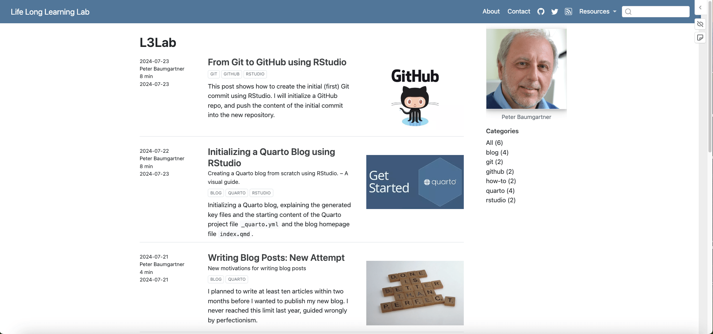

In this article, I will explain and explore the source code that was automatically generated when I created my blog with RStudio as described in Initializing a Quarto Blog with RStudio.
Virgin Title Page
Here is the source code of the main index.qmd after the initialization:
index.qmd
---
title: "quarto-pb-blog"
listing:
contents: posts
sort: "date desc"
type: default
categories: true
sort-ui: false
filter-ui: false
page-layout: full
title-block-banner: true
---And here is the look of the blog’s home page after the first rendering:
![Screenshot of the blog’s homepage. The grey title banner consists of two line. On the top left corner: 'quarto-pb-blog'. On the top right corner: 'About' and the icons for GitHub, X formerly Twitter and a magnifying glass for a search engine. On the lower left side: 'quarto-pb-blog' in bold. The white main page consists of four columns. It contains form left to right dummy data: Date and author; title of blog post in bold, buttons for categories, short summary; image; a list of categories with number of their appearances in parenthesis.](virgin-blog-homepage-min.png)
As you see the title banner shows twice the name of the R project folder ‘quarto-pb-blog’.
Change Title
The first line of the homepage’s YAML header in index.qmd is the title. If I change the title to “L3Lab,” only one part of the title banner will change.
![Screenshot of the blog’s homepage. The grey title banner consists of two line. On the top left corner: 'quarto-pb-blog'. On the top right corner: 'About' and the icons for GitHub, X formerly Twitter and a magnifying glass for a search engine. On the lower left side: 'L3Lab' in bold. The white main page consists of four columns. It contains form left to right dummy data: Date and author; title of blog post in bold, buttons for categories, short summary; image; a list of categories with number of their appearances in parenthesis.](blog-title-changed-min.png)
index.qmd
The reason is that the upper left text is written in the Quarto project file.
_quarto.yml
project:
type: website
website:
title: "quarto-pb-blog"
navbar:
right:
- about.qmd
- icon: github
href: https://github.com/
- icon: twitter
href: https://twitter.com
format:
html:
theme: cosmo
css: styles.cssThe top left name is the website’s title (and not the blog title). A website can have several components, such as a web page and a blog. I will call the website “Life Long Learning Lab,” the blog’s name remains “L3Lab”.
![Screenshot of the blog’s homepage. The grey title banner consists of two line. On the top left corner: 'quarto-pb-blog'. On the top right corner: 'About' and the icons for GitHub, X formerly Twitter and a magnifying glass for a search engine. On the lower left side: 'L3Lab' in bold. The white main page consists of four columns. It contains form left to right one row of dummy data: Date and author; title of blog post in bold, buttons for categories, short summary; image; a list of categories with numbers of their appearances in parenthesis.](website-title-changed-min.png)
_quarto.yml
The website’s header doesn’t look nice. I will change the blog’s design (color, font size, layout, etc.) later in a separate post.
Explore Listing
Contents Directive
Listings enable you to automatically generate the contents of a page from a list of Quarto documents. In our case, the blog’s title is actually the home page’s listing title.
Instead of listing: default for a list of all documents in the directory and a drop-down menu for sorting direction, order criteria, and a search bar, we have specified with content: posts that only the documents in the folder “posts” should be listed. Have a look into the “posts” folder by selecting the “Files” tab in the bottom right pane of RStudio and click on the “posts” folder to open the directory.
{kind=link}
posts folder immediately after the initialization process
The two folders “post-with-code” and “welcome” contain the two dummy articles generated automatically in the initialization process. I will explain the function of the _metadata.yml file later in another post.
Besides to list all articles of a folder, you can also write much more complex rules for including content by using globs and a list of targets in the contents directive. See for more details the two sections of the Quarto documentation: Listing Contents and Custom Listings.
Listing Types
There are three built-in types of listings you can choose from:
| Type | Description |
|---|---|
default |
A blog-style list of items. |
table |
A table of listings. |
grid |
A grid of listing cards. |
I am going to use for my blog the default blog-style list of items. However, it is instructive to see the other types to get a sense of their different appearances.
Grid Listings
![Screenshot of the blog’s homepage. The grey title banner consists of two line. On the top left corner: 'quarto-pb-blog'. On the top right corner: 'About' and the icons for GitHub, X formerly Twitter and a magnifying glass for a search engine. On the lower left side: 'L3Lab' in bold. The white main page consists of two boxes and a list of categories. Each box consists of five (dummy) elements. From top to down: image, post title, category buttons, short description, author and date. On the right side is a list of categories with numbers of their appearances in parenthesis.](grid-listing-min.png)
Table Listings
![Screenshot of the blog’s homepage. The grey title banner consists of two line. On the top left corner: 'quarto-pb-blog'. On the top right corner: 'About' and the icons for GitHub, X formerly Twitter and a magnifying glass for a search engine. On the lower left side: 'L3Lab' in bold. The white main page consists of a table of three columns and a list of categories. The two rows are titled 'Date', 'Title', and 'Author'. The two rows from, consists each from left to the right with dummy data: 'July 17, 2024', 'Post With Code', 'harlow Malloc' and 'July 14, 2024', 'Welcome to the Blog', and 'Tristan O'Malley'. On the right side is a list of categories with numbers of their appearances in parenthesis.](table-listing-min.png)
Default Listings
![Screenshot of the blog’s homepage. The grey title banner consists of two line. On the top left corner: 'quarto-pb-blog'. On the top right corner: 'About' and the icons for GitHub, X formerly Twitter and a magnifying glass for a search engine. On the lower left side: 'L3Lab' in bold. The white main page consists of four columns. It contains form left to right two rows of dummy data: Date and author; title of blog post in bold, buttons for categories, short summary; image; a list of categories with numbers of their appearances in parenthesis.](default-listing-min.png)
Sort articles
Using the sort option controls the order of the listing. Each sort key can include a field name and optionally either asc or desc to control whether to sort in ascending or descending order. Since the default order is ascending, I had to add desc to get the most current article at the top. The sort key can also contain more than one field to sort.
Listing options
For every listing type, there are several listing options to specify details, such as:
- The maximum number of items:
max-items - The height of the image:
image-height. The width is automatically determined and the image will fill the rectangle without scaling (i.e., cropped to fill). - A placeholder for the image:
image-placeholder. The default image for items if they do not refer to a special image. For more options, see Listing Options and Advanced Options.
Categories
Listings can also automatically add a list of categories to the page on which they appear. To turn on this behavior, you must set the option for categories to true: categories: true. You can choose between a few different category display styles: numbered, unnumbered, and word cloud.
When users click a category, the page will be updated to show only a listing of the items that match the selected category.
Sort- and Filter- Interface
Listings support interactive tools that allow the listing viewer to sort, filter, or page through listings.
I have turned off the sort and filter user interface and applied the default number of items per page for the default listing type: page-size: 25.
Page Layout
Quarto provides three different default layouts for HTML pages:
- The
articlelayout provides a content area with a page-based grid layout that provides margins, areas for sidebars, and a reading width-optimized body region. I am going to use this layout type for article content. See for more information on article layout. - The
fulllayout uses the article grid system but automatically expands the content area to use the sidebar and margin region if no content is placed within those regions. This is useful for layouts that don’t need to be constrained to reading width, and that will benefit from additional horizontal space (e.g., landing or index pages). It is also often appropriate for listing pages. - The
customlayout provides the possibility to create an individual layout. Learn more on the Page Layout page.
Title Block Banner
HTML pages rendered with Quarto include a formatted title block at the start of the article. The title block contains the title, subtitle, authors, date, doi, and abstract. There are several options to style the title block. In addition, if you’d like a more prominent title block, you can use title-block-banner to create a banner-style title block.
For my blog, I don’t want (at the moment) a title block banner. Setting title-block-banner to false saves space on the title page and feels more prosaic and less business-like.
![Screenshot of the blog’s homepage. The grey title header consists of one line. On the top left corner: 'Life Long Learning Lab'. On the top right corner: 'About' and the icons for GitHub, X formerly Twitter and a magnifying glass for a search engine. The white main page consists of four columns. It contains form left to right two rows of dummy data: Date and author; title of blog post in bold, buttons for categories, short summary; image; a list of categories with numbers of their appearances in parenthesis. The left first column is tited 'L3Lab'](no-title-block-banner-min.png)
Git and GitHub
Here I will pause and commit these changes to Git and GitHub. It is interesting to note that there are – besides index.qmd and _quatro.yml – several other files that have changed.
![RStudio top right pane with the following tabs: Environment, History, Connection, Build, Git, and Tutorial. The Git pane is selected and therefore active. Under the tabs is another line of icons and text buttons representing Git actions: From left to right: 'Diff', 'Commit', 'Pull', 'Push', 'History', 'More' (drop-down menu), 'New Branch', 'master'). Underneath it shows changed files. From top to the bottom: '_quarto.yml', 'index.qmd', '_site/about.html' (with blue background = selected, '_site/index.html', '_site/search.json', '_site/posts/post-with-code/index.html', and '_site/posts/welcome/index.html'](changed-files-min.png)
I haven’t even touched many of these files. But the title change propagates the new name into all blog post titles of articles already written and also in the corresponding navigation bars. This is shown with the example of the about page in the next screenshot (Figure 10).
![A pop-up window overlaying the RStudio window separated in two parts: The left part contains at the top small buttons. From left to the right: 'Changes', 'History', 'master', 'stage', 'revert', and 'ignore.' The right part contains the buttons 'Pull' and 'Push.' Underneath of the left side are changed files listed. From top to the bottom: '_quarto.yml', 'index.qmd', '_site/about.html' (with blue background = selected, '_site/index.html', '_site/search.json', '_site/posts/post-with-code/index.html', and '_site/posts/welcome/index.html' On the right side there is an empty writing pane with the header 'Commit message'. Under the writing pane are two unchecked check boxes 'Amend previous commit' and 'Sign commit' with a 'Commit' button. Underneath those two window parts is another line of action buttons covering the whole length of the window: From left to the right: 'Show Staged' text followed by an empty radio button, 'Staged' text followed by an active radio button, 'Context' (text), 5 lines (drop-down menu), 'Ignore Whitespace' (active check box), 'Unstage All'. Underneath is the content of the HTML code of the 'About' file listed over the whole length of the window. Every line is numbered. Line 10 and 81 are duplicated. The first line 10 with a red background reads '<title>About - quarto-blog-title</title>'. The second line underneath is green and reads: '<title>About - Life Long Learning Lab</title>'. The first line 81 with a red background reads '<span class=navbar-title>quarto-pb-blog</span>'. The second line underneath is green and reads: '<span class=navbar-title>Life Long Learning</span>'.](content-of-changes-in-about-min.png)
And I have committed all these changes I’ve got with this second commit a new status in my GitHub repo.
![Listing the committed files on the GitHub repo web page in three columns. Name, commit message ('First commit' for all lines) and time ('19 minutes ago' for all lines). At the top left of this list there is a small profile picture of me, followed by the name of my GitHub account 'petzi53' and the text 'first commit'. On the top left of this list there is a small profile picture of me, followed by the name of my GitHub account 'petzi53' and the text 'title of homepage listing and website'. On the top side you can see the unique commit code '1e825ff' followed by the text '15 minutes ago' and in bold '2 Commits'](github-second-commit-2-min.png)
Summary
I have explained the different YAML directives for the blog’s homepage file index.qmd, which are generated automatically when the Quarto blog is initialized. During this tour I have changed two options:
- The title of the blog listing in
index.qmdand of the website in_quarto.yml. - I got rid of the title block banner.
To follow the next sequence of my blog tutorial, check if you have the same starting position.
The changes of the source code of the home page index.qmd result to:
index.qmd
---
title: "L3Lab"
listing:
contents: posts
sort: "date desc"
type: default
categories: true
sort-ui: false
filter-ui: false
page-layout: full
title-block-banner: false
---There are also a change in the website title in the _quatro.yml file:
_qarto.yml
project:
type: website
website:
title: "Life Long Learning Lab"
navbar:
right:
- about.qmd
- icon: github
href: https://github.com/
- icon: twitter
href: https://twitter.com
format:
html:
theme: cosmo
css: styles.cssThen I have committed these changes to Git and my dummy GitHub repo.